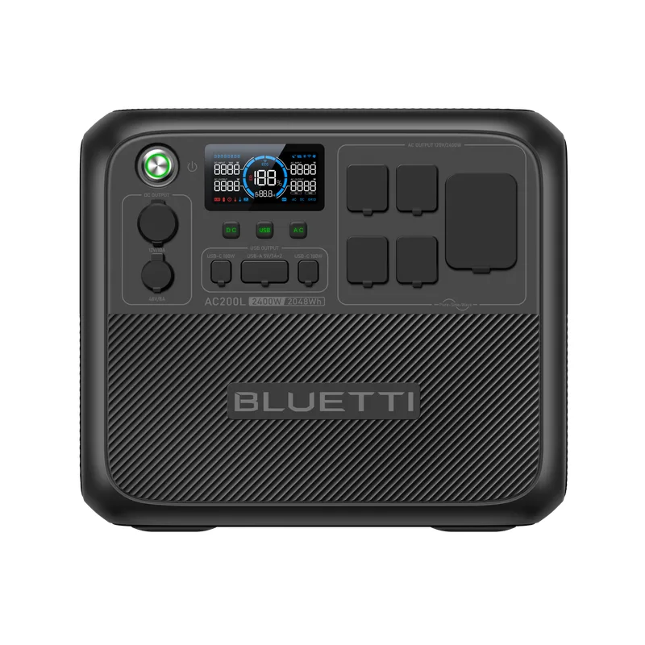

2,048Wh of LiFePO4 power, 2,400W output, expandable to 8,192Wh. We test whether the AC200L earns its spot as the most recommended mid-range solar generator of 2026.
Quick Answer: The BLUETTI AC200L is the best mid-range portable power station in 2026 for most buyers. It delivers 2,048Wh of LiFePO4 capacity and 2,400W continuous output for around $1,199 — roughly 20% less per watt-hour than the Jackery Explorer 2000 Plus. It runs a 5,000 BTU window AC, a full-size fridge, power tools, and most small appliances. Expandable to 8,192Wh with B210 batteries. The only downsides are its 62 lb weight and no 30A RV plug.
The AC200L sits in the sweet spot between underpowered budget units and expensive whole-home systems. It's for buyers who need real backup power — not just phone charging — without spending $2,500+ on an AC300 or Delta Pro setup.
| Spec | BLUETTI AC200L |
|---|---|
| Capacity | 2,048Wh |
| Battery Type | LiFePO4 (Lithium Iron Phosphate) |
| Cycle Life | 3,500+ cycles to 80% capacity |
| AC Output | 2,400W continuous / 3,600W surge |
| Solar Input | 1,200W max (VOC 12-150V) |
| AC Charging | 2,400W (0-80% in ~45 min with AC + solar) |
| UPS Mode | 20ms switchover |
| Expandable | Yes — up to 3x B210 batteries (8,192Wh total) |
| AC Outlets | 4x 120V/20A |
| USB Ports | 2x USB-C (100W), 2x USB-A, 1x wireless charging pad |
| 12V Outputs | 1x 12V/10A car port, 2x DC 5521 |
| Weight | 62.4 lbs (28.3 kg) |
| Dimensions | 16.5 x 11.0 x 14.4 in |
| Operating Temp | -4°F to 113°F (-20°C to 45°C) |
| Warranty | 6 years |
| MSRP | $1,199 |
The AC200L uses LiFePO4 chemistry rated for 3,500+ cycles before dropping to 80% capacity. If you fully discharge and recharge it once per day, that's nearly 10 years before you'd notice reduced runtime. NMC-based competitors (older Jackery and EcoFlow models) typically last 500-1,000 cycles — a fraction of the lifespan.
Most mid-range units cap at 1,800-2,000W. The AC200L's 2,400W continuous output (3,600W surge) means it actually powers the appliances people buy these for: window AC units, microwaves, hair dryers, power tools, and full-size refrigerators. No "rated for 2,000W but shuts off at 1,600W" games.
The dual MPPT controller accepts up to 1,200W of solar input. With four 300W panels, you can recharge from empty in under 2 hours of direct sun. For RV and off-grid users, this means you can drain the battery running the AC overnight and have it fully charged again by early afternoon.
Start with 2,048Wh. Add one, two, or three B210 expansion batteries when your needs grow — up to 8,192Wh total without buying a new inverter unit. This is the AC200L's biggest edge over sealed competitors: you scale capacity without starting over.
Plug into a wall outlet and hit 80% in about 45 minutes using combined AC + solar charging (2,400W AC + 1,200W solar = 3,600W total input). Even AC-only charging reaches full in about 1.5 hours. If a storm is forecast, you can top off from empty to full during lunch.
With UPS mode enabled, the AC200L switches to battery power within 20 milliseconds of a grid outage. That's fast enough to keep your router, NAS, desktop PC, and security cameras running without rebooting. Not as fast as a dedicated UPS (3-5ms), but well within tolerance for consumer electronics.
The AC200L weighs 62.4 lbs. That's manageable for moving around the house or loading into a car, but it's not a grab-and-go unit for hiking or kayaking. The Jackery Explorer 2000 Plus is lighter at 60.6 lbs, but neither is truly "portable" in the backpacking sense. If weight matters more than capacity, look at the BLUETTI AC70 (24 lbs).
The AC200L has four standard 120V/20A outlets but no dedicated 30A RV plug (TT-30). RV owners will need a 15A-to-30A adapter, which works but adds a $15-20 purchase and a potential failure point. The AC300 includes a 30A RV outlet.
The BLUETTI app handles firmware updates, power monitoring, and UPS configuration. It works. But the interface feels utilitarian compared to EcoFlow's more polished app design. You'll set it up once and rarely open it again — which is fine, but power users who want detailed consumption graphs may find it lacking.
Based on the AC200L's 2,048Wh capacity (usable ~1,900Wh accounting for inverter efficiency):
| Device / Load | Wattage | Est. Runtime |
|---|---|---|
| Phone charging (5 phones) | 50W | ~34 hours |
| Laptop + monitor | 120W | ~14 hours |
| LED lights + fan + router | 80W | ~21 hours |
| Full-size fridge | 150W avg | ~11 hours |
| 5,000 BTU window AC | 500W | ~3.5 hours |
| Microwave (1,000W) | 1,000W | ~1.7 hours |
| Circular saw | 1,400W | ~1.2 hours |
| Hair dryer | 1,800W | ~55 min |
| Overnight home backup (fridge + lights + phones + router) | ~230W avg | ~7.5 hours |
| Spec | BLUETTI AC200L | Jackery 2000 Plus | EcoFlow Delta 2 Max | ALLPOWERS R3500 |
|---|---|---|---|---|
| Capacity | 2,048Wh | 2,042Wh | 2,048Wh | 3,168Wh |
| AC Output | 2,400W | 2,000W | 2,400W | 3,500W |
| Battery | LiFePO4 | LiFePO4 | LiFePO4 | LiFePO4 |
| Cycle Life | 3,500+ | 4,000 | 3,000 | 3,500+ |
| Solar Input | 1,200W | 1,000W | 1,000W | 1,200W |
| Expandable | 8,192Wh | 12,000Wh | 6,144Wh | Yes |
| Weight | 62 lbs | 61 lbs | 51 lbs | 78 lbs |
| UPS | 20ms | 20ms | 30ms | 15ms |
| Price | ~$1,199 | ~$1,499 | ~$1,699 | ~$1,299 |
Key takeaway: The AC200L matches or beats the Jackery 2000 Plus on every spec except cycle life (3,500 vs 4,000) and max expansion — while costing $300 less. The EcoFlow Delta 2 Max is lighter but $500 more expensive. The ALLPOWERS R3500 offers significantly more capacity for only $100 more, but weighs 78 lbs. For most buyers at the $1,000-$1,500 price point, the AC200L is the best balance of power, weight, expandability, and value.
This is the most common question we get. Here's the simple answer:
If you're unsure, start with the AC200L. You can add B210 expansion batteries later if you need more capacity, and the total investment grows with your needs rather than upfront.

Best mid-range solar generator — 2,048Wh LiFePO4, 2,400W output, expandable
The BLUETTI AC200L is the best solar generator under $1,300 in 2026. It delivers the capacity and output that budget units can't match, at a price that the premium units can't touch. The LiFePO4 battery will outlast the next decade of power outages, and the expansion path to 8,192Wh means you'll never outgrow it. Loses half a star for weight and the missing RV plug — but at this price, those are easy trade-offs.
Shop BLUETTI AC200L →Yes. The AC200L is the best mid-range solar generator for most buyers in 2026. It delivers 2,048Wh of LiFePO4 capacity with 2,400W output for around $1,199 — roughly $200-300 less than comparable units from Jackery and EcoFlow. The expandable design lets you add up to three B210 batteries (8,192Wh total), and the 3,500+ cycle LiFePO4 battery lasts 10+ years of daily use.
The AC200L can run most 5,000 BTU window AC units (typically 450-550W running, 1,200-1,500W startup). Its 2,400W continuous output and 3,600W surge handle the startup spike. A 5,000 BTU AC running at 500W would last about 3.5 hours on a full charge. For 8,000+ BTU units that draw 800-1,000W, runtime drops to about 1.5-2 hours. The AC200L cannot run central air or mini-splits.
Runtime depends on your load. At 100W (phones, laptops, LED lights), the AC200L lasts approximately 17 hours. At 500W (small appliance, TV, fan), expect 3.5 hours. For overnight home backup running a fridge plus lights and phone charging (~230W average), expect 7-8 hours. With a B210 expansion battery doubling capacity, those runtimes double.
Buy the AC200L if you need a self-contained unit under $1,300 for camping, apartments, or moderate home outages. Buy the AC300 if you need whole-home backup, maximum expandability (up to 12,288Wh), 3,000W output, or plan to add solar panels above 1,200W. The AC300 requires at least one B300 battery pack ($1,599+ total), while the AC200L works out of the box.